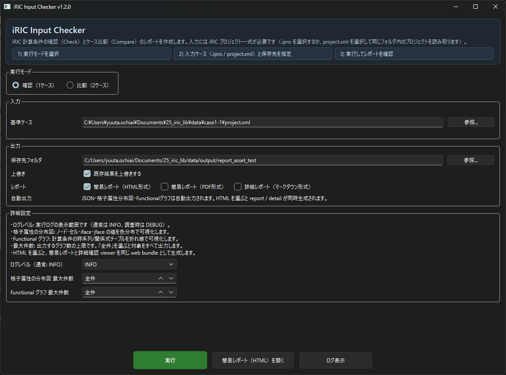
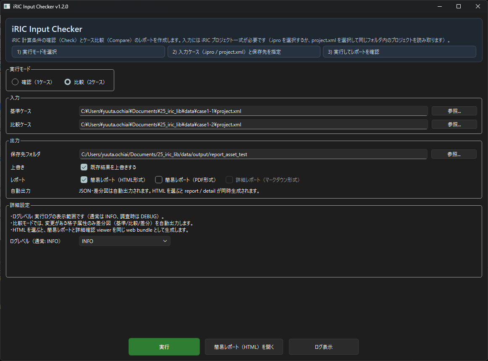
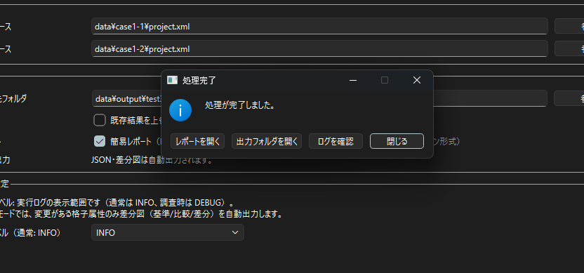
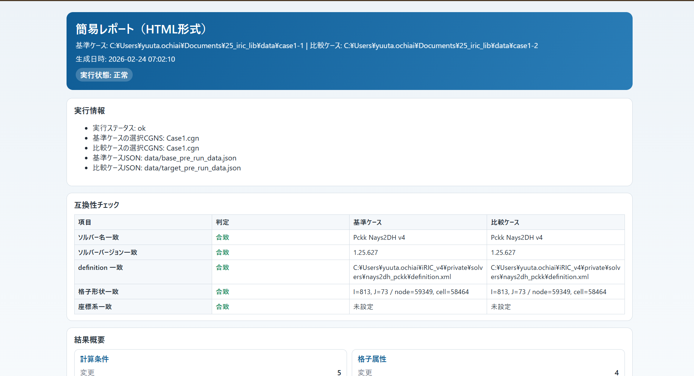
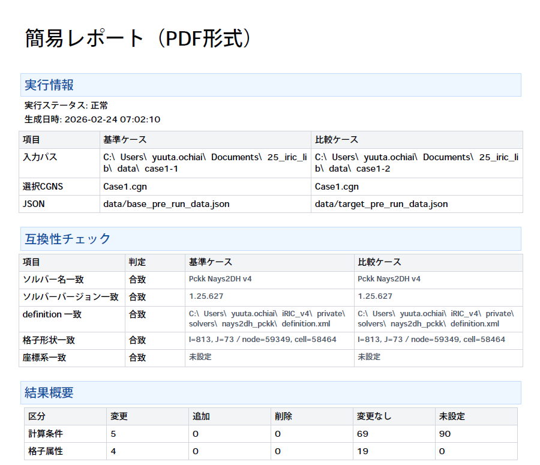

iRIC Input Checker ユーザードキュメント¶
本ドキュメントは、配布版 iRIC Input Checker の操作手順と運用上の注意点をまとめた利用者向けマニュアルです。
対象読者¶
- GUI 操作で入力条件の確認レポートを作成する利用者
- 2ケース比較レポートを作成する利用者
- Python 開発環境を使わずに配布バイナリを利用する利用者
利用手順（概要）¶
- 配布物を任意のフォルダへ展開します。
iRIC Input Checkerを起動します。- 入力ケース（
.iproまたはproject.xml）と保存先フォルダを指定します。 - 必要なレポート出力設定を選択し、実行します。
- 生成されたレポート（HTML / PDF）を確認します。
詳細手順は以下を参照してください。
入力に関する注意¶
project.xmlを入力に使用する場合は、同一フォルダ内にプロジェクト一式がそろっている必要があります。- 保存先フォルダには、入力プロジェクト配下を指定できません。
画面例¶
本ドキュメントでは、以下の画面例を掲載します。
- 確認モードのメイン画面
- 比較モードのメイン画面
- 実行完了ダイアログ
- HTMLレポート表示例
- PDFレポート表示例
確認モードのメイン画面¶

比較モードのメイン画面¶

実行完了ダイアログ¶

HTMLレポート表示例¶

PDFレポート表示例¶
